🧍♀️
Avaliação Postural
Diagnóstico funcional individual, ponto de partida do tratamento
Com diástase antiga, abdômen protuso ou pós-cirurgia plástica — mulheres que sentem que o corpo já não responde como antes e buscam recuperar leveza e função.
Sessões individuais e em pequenos grupos de exercício hipopressivo, sempre com acompanhamento próximo — do primeiro diagnóstico postural ao tratamento da diástase abdominal e aos resultados no dia a dia.
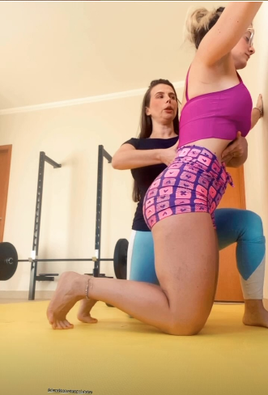
Diagnóstico funcional individual, ponto de partida do tratamento
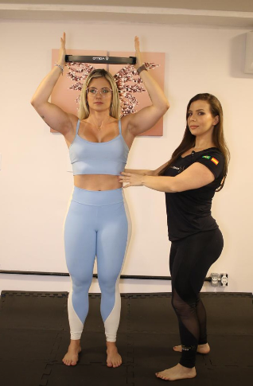
Atendimento 1:1, no seu ritmo e na sua respiração
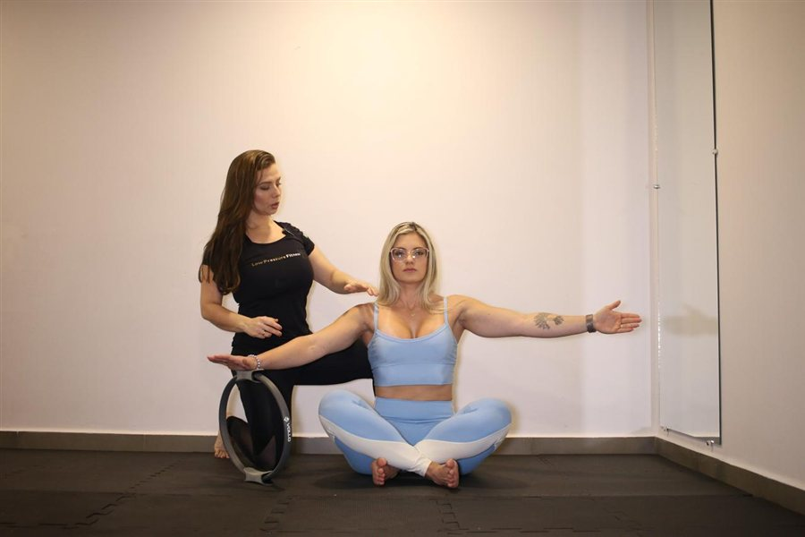
Acompanhamento próximo em cada movimento
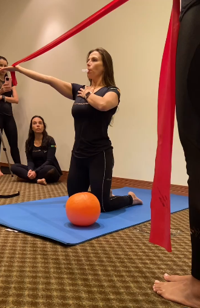
Turmas reduzidas, comunidade LPFlovers
Diagnóstico funcional individual, ponto de partida do tratamento
Atendimento 1:1, no seu ritmo e na sua respiração
Acompanhamento próximo em cada movimento
Turmas reduzidas, comunidade LPFlovers
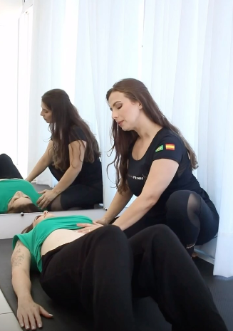
Recuperação abdominal com atenção e sensibilidade
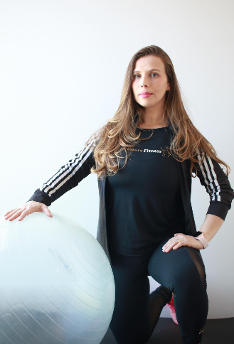
Assoalho pélvico e estabilidade para o dia a dia
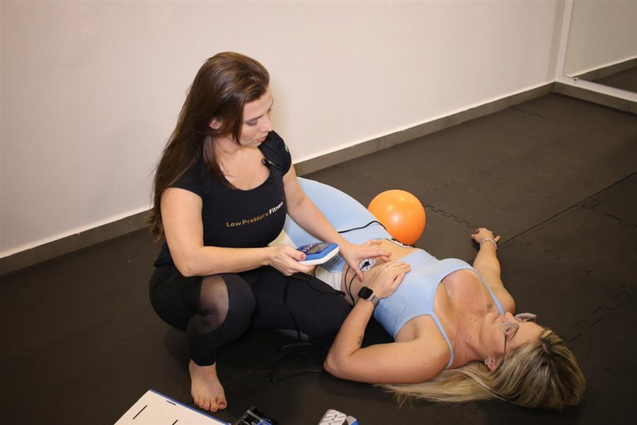
Ativação profunda e reorganização funcional
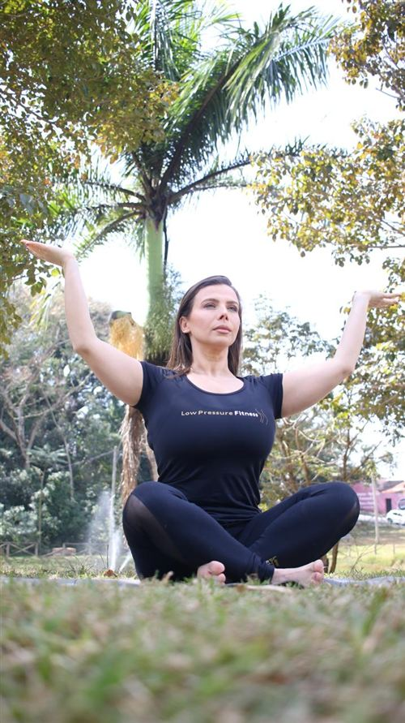
Base do Método LPF para estabilidade profunda
Recuperação abdominal com atenção e sensibilidade
Assoalho pélvico e estabilidade para o dia a dia
Ativação profunda e reorganização funcional
Base do Método LPF para estabilidade profunda
Formação, ciência e atenção individual — a mesma combinação que fez dela a pioneira do LPF em Botucatu. Mais do que LPF, uma abordagem integrada.
Licenciatura Plena em Educação Física, Mestrado pela EEFERP/USP e Pós-graduação em Personal Training – USP.
Estabilidade profunda e reorganização respiratória, desenvolvido a partir de mais de 15 anos de prática.
Formação em Treinamento Fascial System e Fascial Breathing, com certificação na Espanha, EUA e Brasil.
Cada plano é ajustado ao seu corpo, sua história e seu objetivo. Os treinamentos podem ser associados à laserterapia, eletroestimulação e estratégias de modulação vagal, de acordo com as necessidades e objetivos de cada aluna.
Integrada de forma pontual para ativação profunda e reorganização funcional.
Acompanhamento que vai além da aula, com suporte contínuo.
A nota que as próprias alunas deram para o atendimento da Camila.
"Experiência excelente, procedimento totalmente personalizado. Com uma sensibilidade incrível e muita atenção aos detalhes. Com a Cá e o LPF me sinto conectada com o meu corpo e a cada dia fico mais feliz com os resultados." Ana Claudia Dias · avaliação no Google
Fotos enviadas por alunas, em diferentes ângulos, ao longo do trabalho com o Método LPF.
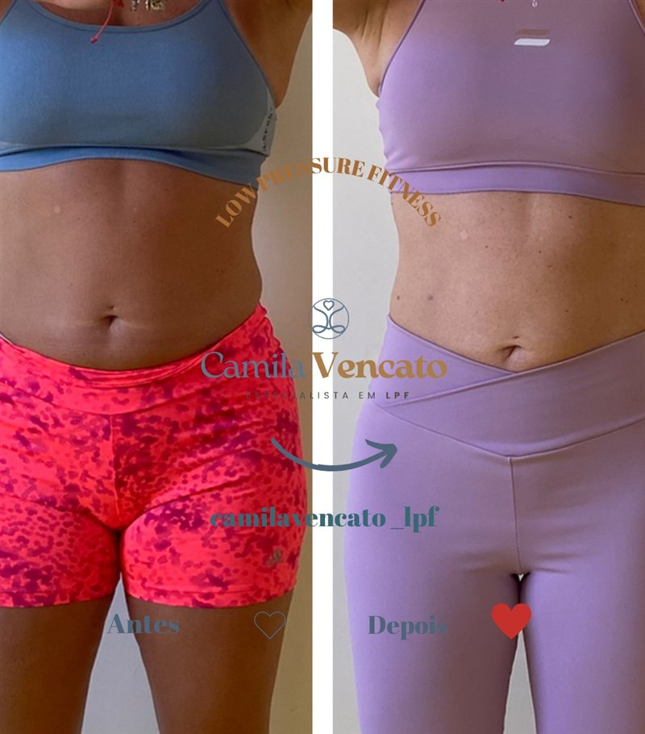
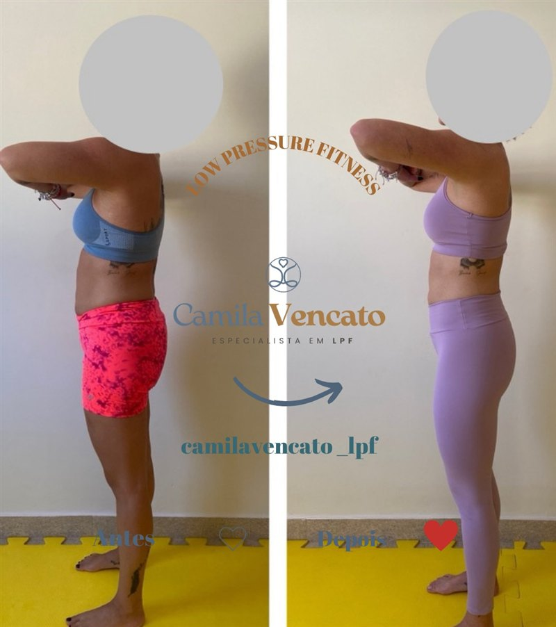
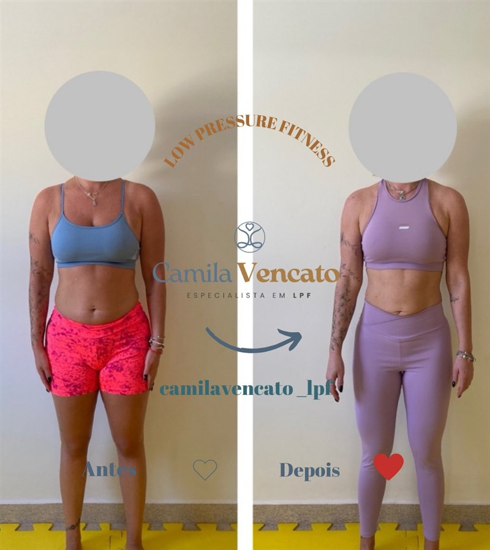
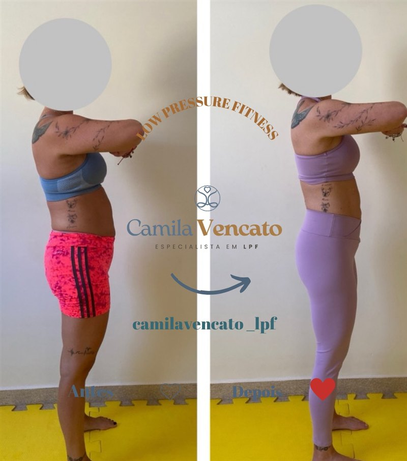
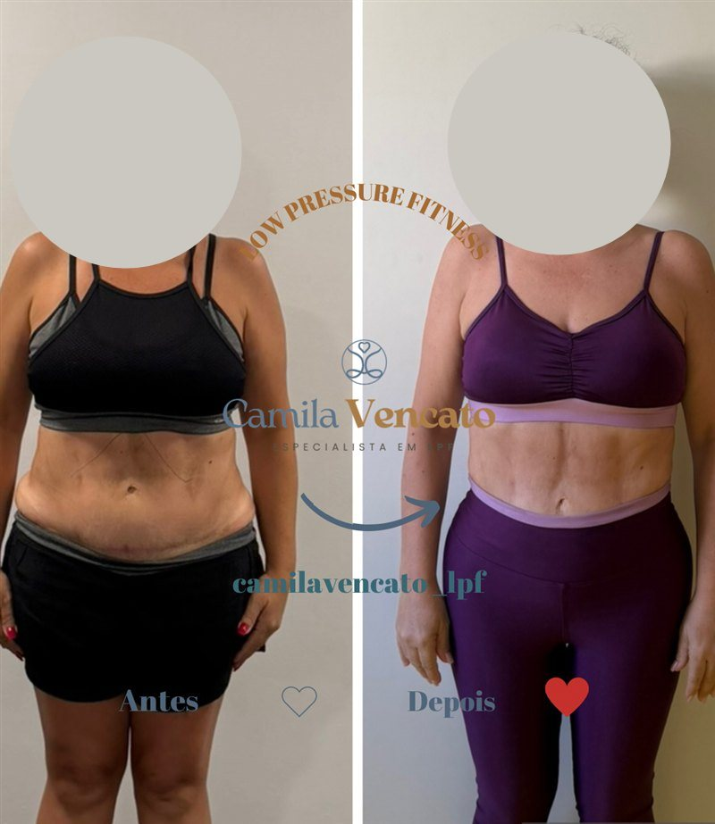
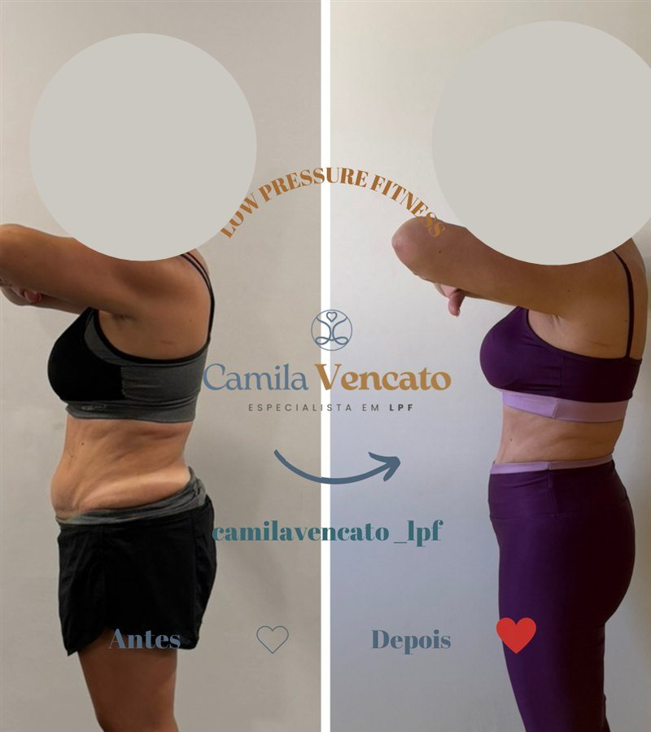
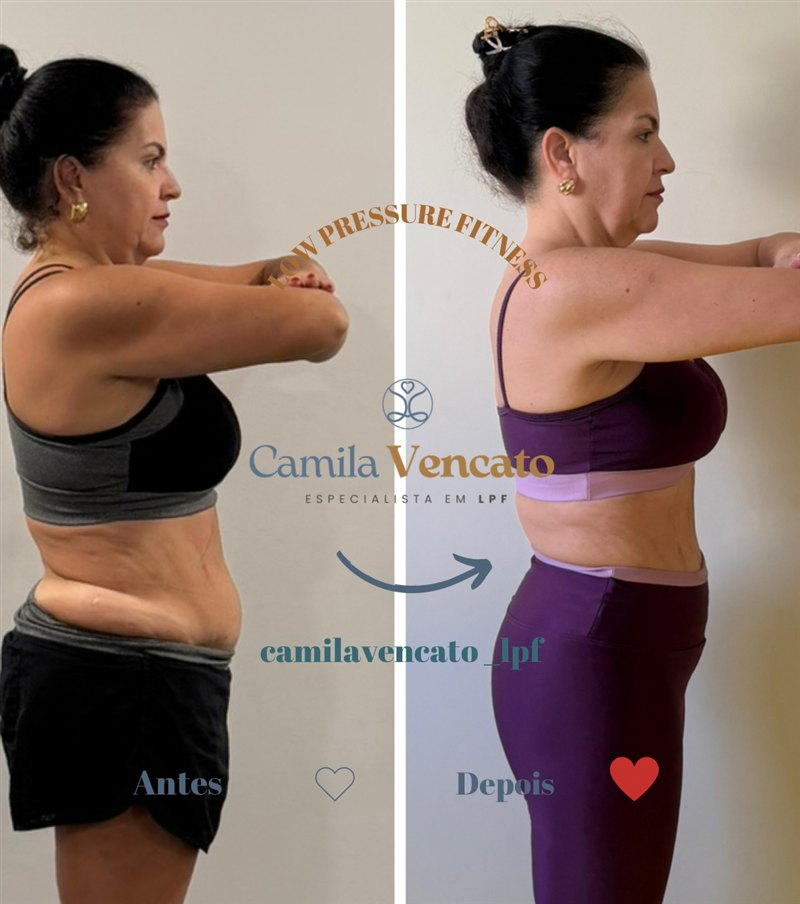
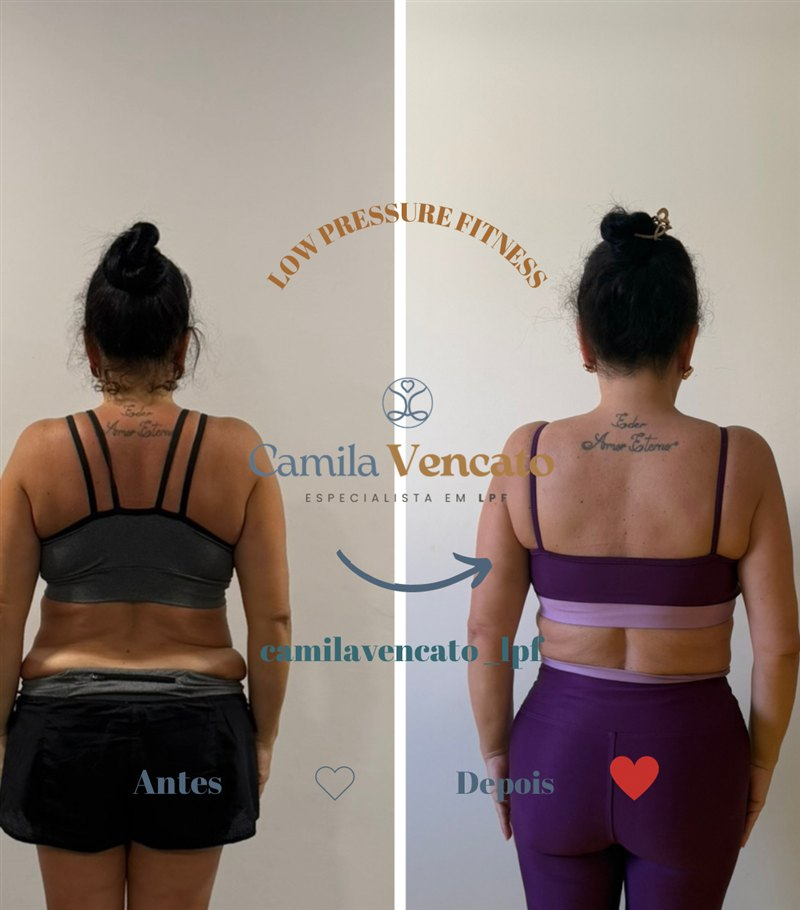
Resultados individuais podem variar conforme histórico, objetivo e frequência de cada aluna.
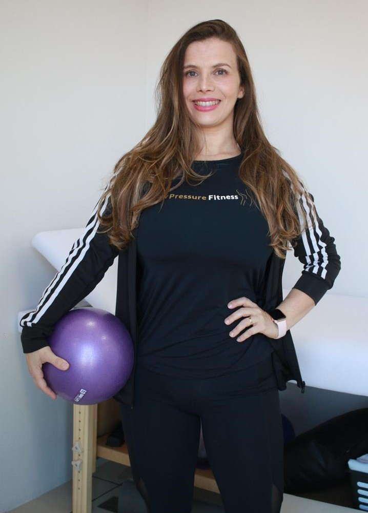
"Trabalho com movimento humano desde 2008. Sou especialista em restaurar função, respiração e estabilidade profunda com ciência, escuta e intuição."
Camila Vencato foi a primeira a trazer o método LPF (Low Pressure Fitness) — o exercício hipopressivo — para Botucatu e é a criadora do Método AYRA, sua própria abordagem de estabilidade profunda e reorganização respiratória. Atua no tratamento de diástase abdominal e na recuperação abdominal pós-parto, unindo formação acadêmica sólida e sensibilidade no atendimento — sempre pensando no corpo e no tempo de cada aluna.
Anos de formação aplicados na prática real de cada aula.
"Método, ciência e sensibilidade aplicados com precisão."
Minha missão é ajudar mulheres a recuperarem função, respiração eficiente, estabilidade profunda, consciência corporal, estética inteligente e energia.
O que alunas em Botucatu mais perguntam sobre diástase abdominal, recuperação pós-parto e exercício hipopressivo.
Diástase abdominal é o afastamento dos músculos retos do abdômen, comum na gravidez e no pós-parto. O tratamento usa exercícios de respiração e ativação profunda — como os do Método LPF — para reorganizar a musculatura e devolver função ao core. Em Botucatu, a avaliação postural inicial define o plano mais adequado para cada caso.
O exercício hipopressivo, ou Low Pressure Fitness (LPF), é uma técnica de respiração e postura que reduz a pressão dentro do abdômen. Fortalece o assoalho pélvico e o core, ajuda no tratamento da diástase abdominal e é indicado na recuperação abdominal pós-parto.
Varia de aluna para aluna, conforme histórico, tipo de parto e frequência dos treinos. A avaliação postural inicial ajuda a traçar o caminho mais seguro para recuperar força e estabilidade no abdômen pós-parto.
Não — ele complementa. O exercício hipopressivo trabalha respiração e ativação profunda do core de forma segura, sem aumentar a pressão intra-abdominal, o que o torna um bom ponto de partida antes ou junto de outros exercícios de fortalecimento abdominal.
Camila Vencato foi a primeira a trazer o Método LPF (exercício hipopressivo) para Botucatu-SP, com atendimento individual e em grupo no Jardim Planalto.
R. Santin Antônio Furlan — Jardim Planalto, Botucatu-SP, 18608-251
(14) 99622-1865
Segunda a sábado, mediante agendamento · Domingo: fechado
5,0 de 5 (4 avaliações)